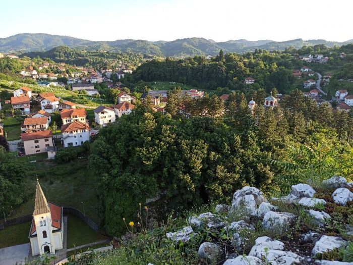

Hi! I am Ermin Hodžić (Ermin Hodzic), currently a postdoctoral fellow under the supervision of Teresa M. Przytycka at the National Center for Biotechnology Information. Previously, I was an MSc and subsequently PhD student supervised by S. Cenk Sahinalp at Simon Fraser University.
For a glance at my publications and published research, please refer to my Google Scholar page. If you need my CV/resume, please contact me via email.
If you have questions or requests for me, feel free to send an email to , or .
Below is a picture of my beloved small home town of Tešanj, in Bosnia and Herzegovina :)
